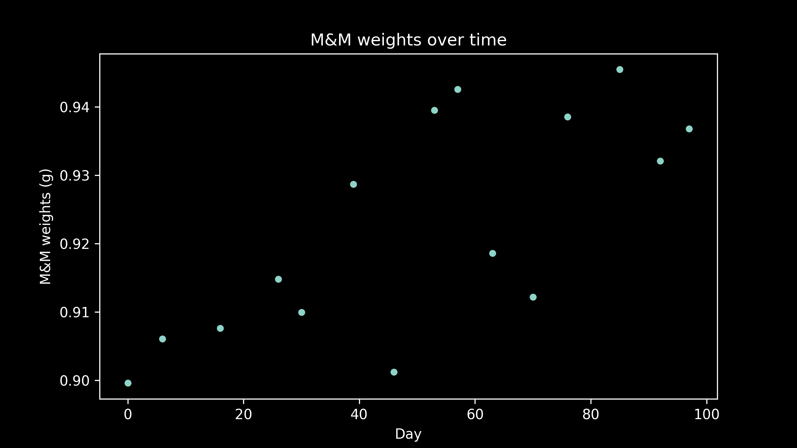

- Part 1: Optimization methods [post] [video]
- Part 2: Optimizing a central tendency model [post] [video] [code]
- Part 3: Optimizing a linear model [post] [video] [code]
- Part 4: Optimizing complex models [post] [video] [code]
- [slides]
Now that we have laid all the groundwork, we can take things up a level and see how to apply optimization in a three parameter model by looking at another M&M data set. We noticed when fitting our line that not every bag had identical M&M weights. Some of them were noticeably higher and some noticeably lower than the others. We suspect there may an underlying pattern here. Our suspicions are further aroused when we talk to some of our friends that work at the M&M factory. We learned that they upgraded some of their equipment during the period that our M&Ms were sampled from, but we don't know exactly when.
If there was a change in M&M weight due to the change in equipment, we would expect to see a jump at some point, with the M&Ms coming after the jump having a consistently higher or lower weight.
When we plot the average M&M weight in a package against the manufacturing date of that package, we see that there is probably a small difference. There are three questions this data could help us answer: what was the typical M&M weight before the change? What was the typical M&M weight After the change? When did the change occur?
There are lots of generic models available. These are models like linear regression or decision trees that don't know anything about where our data came from or what it means or how we got it. In this example, we can do better than these naive models. We have some extra information that helps us to make a better guess at what our model should look like. Given what we know, it's reasonable to hypothesize a model with a constant M&M weight before and after the equipment change, and a step change between them. This is a three parameter model. There are three numbers we need to define it completely. The weight before the change, the weight after, and the date of the change.
For consistency, we'll keep our loss measure as the square of the deviation between our model and the data. We can now perform an exhaustive search again over all possible combinations of all plausible parameter values (but it's taking a lot longer to compute with each additional parameter!) and get a four-dimensional loss function. Plotting a three dimensional function is tricky. Plotting a four dimensional function is really hard.
Let's give a try. One trick we can use is to choose a specific value for one of our parameters. What’s left is a three dimensional loss function. This lets us experiment and get a feel for how those two parameters interact and where the sweet spot is for both of them. We can see, at least for this value of the third parameter, what combination of the other two parameters produces the lowest loss. In our case, we have fixed the day on which the equipment was swapped out, and are varying the other two parameters, the weight of an M&M before the change, and the weight of an M&M after. The loss function helps us see what the best estimates for these are, at least if we assume this particular equipment shift day.
Another trick we can use is to take the parameter that we chose a fixed value for, our shift day, increment it just a little bit. We can do this again and again and get a series of three dimensional plots. What this does is to take one of our dimensions and spread it out across time. We can use time to represent our fourth dimension.
If you look very carefully as the shift day progresses through its values, you can see the bottom of our bowl jump up and down. This shows how the lowest possible value for the loss function changes, depending on the shift day. We are looking for the very lowest of all possible values. That is the optimal estimate. It depends not only on our estimate for M&M weight before and after the shift day but on our choice for the shift day. There are three separate choices we have to make, three separate dials we have to spin, to find the best answer.
If you watch the bottom of the bowl very carefully as the shift day progresses, you can see that it reaches a low point, then jumps back up again, then reaches another low point. There is more than one low point in our loss function, more than one local minimum. That means that gradient descent will give us different answers, depending on where we start from. The answer is sensitive to our initial guess. This is an example of a non-convex loss function.
As we mentioned before, there are a few ways to handle this. we won’t go into them in detail here, but one method that’s good to have in your bag of tricks is a scattershot approach. That involves choosing several random starting points and running gradient descent from each of them. Once you discover that several of them are ending up in the same place, or that several of them are giving the same minimum value, then you can be reasonably confident that you have a good answer. The more random starting points you pick and the more times the more times you choose a random starting point and try again, the better your chances of finding the global optimum, although you will never be able to guarantee that you have the absolute best answer.
It’s worth keeping in mind however that in machine learning applications, we are dealing with data that is assumed to have some noise on it, and we will be applying our model to future data points they will have their own unique patterns of noise in them. It’s not worth our time to worry about getting the exact perfect global optimum. For our purposes, getting an answer that is just as good as we can get is good enough.
This one concept, of looking for the lowest point in an error function, is all you need to survive in optimization for machine learning. It takes a lot of different forms. It can extend to many more parameters.
It can be used with generic models, like logistic regression, where there can be just a few parameters, or dozens of them. It can be used in very domain specific models, such as macro economics, or agriculture. The optimization method doesn’t know the difference. In either case, all it does is tries to find the right combination of values for getting the lowest loss.
Optimization is also at the heart of deep neural networks’ uccess. It is how all of the weights making all of the between layer connections from node to node are chosen. In these models, there can be thousands or even millions of parameters. The loss function is not only impossible to draw on a sheet of paper, it’s mind boggling to even contemplate. But the math behind optimization carries on anyway, doing it’s thing and seeking out the lowest points of the loss function that it can find. A quirky thing about optimization in deep neural networks is that the loss function is known to have many dips, like a many- dimensional egg crate mattress. Depending on where you drop a marble, it will very likely land in a different divot every time. Deep neural networks can take a long time to train, and in practice they are often trained only once, starting from a single random set of initial weights. That means that of all of the millions of low points available in the loss function, we are only going to find one. This may be one of the reasons that training neural networks is such an art.
It’s not quite as bleak as it sounds however. Recent research suggests that most of these divots have the same depth, like an actual egg-crate mattress, at least for certain types of neural networks. So maybe the multitude of local minima is not as much of an issue as it might appear at first glance.
Another part to the art of deep neural networks is the alphabet soup of gradient descent methods. As you read about it, you will hear names like SGD (stochastic gradient descent), NAG (Nesterov Accelerated Gradient), Adam, Adagrad. All of these are embellishments of gradient descent. They differ in the fine details about exactly how far to step in precisely which direction. Some work a little better for some problems than others. But mostly, they just change is how fast the neural network converges to the final answer. In every case, the underlying goal is the same. Starting from a random place in a many dimensional landscape of hills and valleys, find the lowest point in the nearest valley going downhill.
The other type of optimization that comes up in neural networks is hyper parameter tuning. This is still just optimization, but instead of optimizing the many parameters in the model, it’s actually optimizing the values of some high-level settings that determine how the model works. If decorating a house, you can think of model training as optimization where you are choosing exactly where within a room the couch and the bookshelf and the picture should be and how they should be oriented. Hyperparameter tuning is the next level up. It is deciding which room they should even be in to start with.
Because testing a new set of hyper parameter values requires re-training the model entirely from scratch, it takes a long time and usually a lot of computers. Computational intensity has driven creative machine learning practitioners to find ways to try as few hyperparameter combinations as possible. However, the underlying goal and the underlying problem are still the same. Find the combination of values that gives the lowest loss. Get to the bottom of the deepest valley you can find.
Great job sticking in there to the end! Thanks for hanging in there with me. I hope The concept of optimization is a little bit less scary now and that you have an intuitive sense of what’s going on under the hood when the machine learning algorithm is being trained. Good luck on your next project!